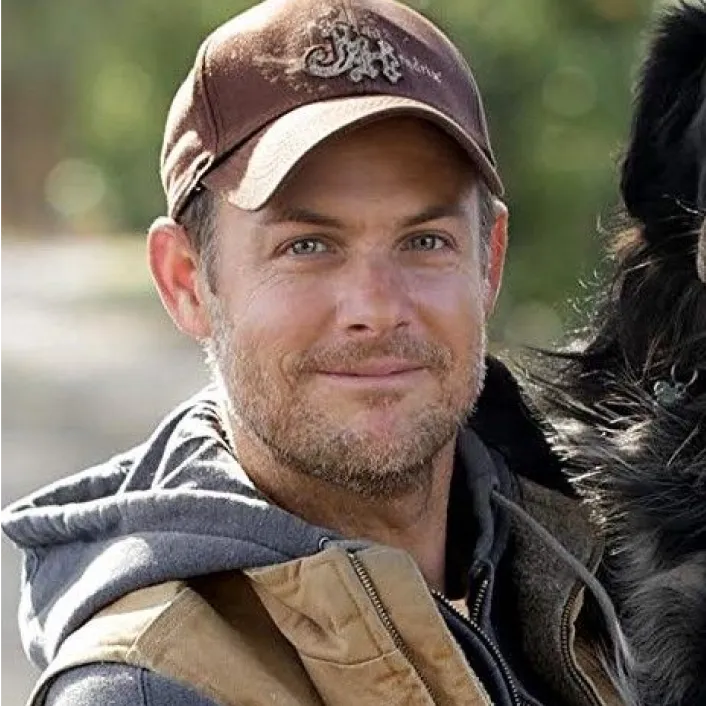

Tout est possible : Quand la nature reprend ses droits
Un récit inspirant qui montre comment la nature, lorsqu’elle est respectée et
valorisée, peut se régénérer et prospérer.
Avec "Tout est possible" (The Biggest Little Farm), le réalisateur John Chester nous plonge dans une
aventure
extraordinaire où un couple décide de transformer une terre stérile en un écosystème florissant.
Synopsis
Lorsque le documentariste John Chester, sa femme Molly et leur chien Todd
reçoivent un avis d'expulsion de leur petit
appartement, ils décident de changer radicalement de vie. Ainsi, ils achètent un terrain de près de 80
hectares, près de
Los Angeles, sur lequel ils développent une ferme durable. Ils ont décidé de filmer leur progression,
leur succès et
échec, durant huit ans de leur vie.
Un défi colossal pour une ferme durable
Lorsque John et Molly Chester quittent la ville pour réaliser leur rêve de créer
une ferme éco-responsable, ils sont
loin d’imaginer l’ampleur des défis qui les attendent. Pendant huit ans, ils vont travailler sans
relâche pour redonner
vie à une terre dégradée. Aidés par des pratiques d’agriculture régénérative, ils transforment un désert
en une oasis de
biodiversité. Leur parcours, semé d’embûches, montre qu’avec de la patience, de la persévérance, et une
profonde
connexion avec la nature, tout est possible.
“Le sol est l’âme de la ferme, et si vous prenez soin de lui, il prendra soin
de tout le reste. ” – John Chester”
Leçons d’harmonie avec la nature
"Tout est possible" n’est pas seulement un documentaire sur l’agriculture, mais
une véritable réflexion sur notre
rapport à la nature. Le film souligne l’importance de l’harmonie entre l’homme et l’environnement, et
prouve qu’en
respectant les lois naturelles, nous pouvons non seulement restaurer les écosystèmes, mais aussi en
tirer des leçons
pour un avenir plus durable. Ce film rappelle à quel point la nature est résiliente lorsqu’on lui en
donne
l’opportunité.
À voir pour tous ceux qui cherchent des solutions durables et un message
d’espoir.
Biographie de John Chester

John Chester est un réalisateur, scénariste et producteur américain reconnu pour
ses documentaires engagés sur la nature
et l'agriculture durable. Originaire du Maryland, il se fait connaître en 2006 avec la série "Random
1" et le film "Lost
in Woonsocket". Son tournant majeur arrive en 2011, lorsqu'il co-fonde avec sa femme Molly la ferme
régénérative Apricot
Lane Farms en Californie.
Cette aventure donne naissance à son œuvre emblématique, "The Biggest Little
Farm" (2018), un
documentaire acclamé qui
retrace les défis et réussites de cette ferme écoresponsable. Présenté à Sundance et Toronto, le film
sensibilise à
l’importance de la biodiversité et de l'agriculture durable.
Auteur de livres jeunesse inspirés par la ferme, Chester a également remporté
un Emmy Award en 2018 pour
son
court-métrage "The Orphan". Il incarne une vision du cinéma engagé, où l’image sensibilise et inspire le
changement
écologique.